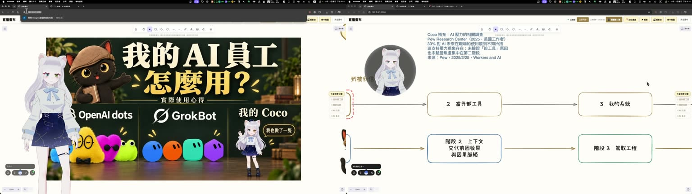

速讀
- 找得到。Google 免費開源的 EmbeddingGemma 2 裝在自己電腦，就能打一句話找圖片、找影片裡的某一頁。
- 畫面上有字的（簡報、海報、圖卡）找得最準；只記得「長什麼樣子」的，比較難找。
- 影片最省事的做法是每 10 秒截一張圖再搜，一個多小時的錄影幾分鐘就處理完，不花雲端費用。
這些情況，你應該遇過
- 記得做過一張圖卡，檔名卻是一串數字，翻了半小時找不到。
- 兩小時的課程錄影，想找「講到那一頁簡報」的片段，只能一直拖時間軸。
- 想丟給 ChatGPT 幫你看，影片太大傳不上去；就算傳得上去，也怕客戶資料外流，而且很花錢。
逐字稿也只幫得上一半：它記下說了什麼，畫面上那一頁寫了什麼，它不知道。
適合誰
- 電腦裡有大量圖片、截圖、課程或活動錄影，常常要回頭找
- 資料不想上傳到雲端，希望在自己電腦處理
- 要幫客戶整理簡報、設計稿、照片，想先知道 AI 搜圖做得到哪裡
你可以帶走什麼
- EmbeddingGemma 2 的白話介紹，和四種尺寸怎麼選
- 網路上大家拿它做的幾種事
- 我用自己的錄影和圖片測出來的結果：哪些找得到、哪些找不到
- 三條開始的路，和一段可以直接貼給 AI 助手的提示詞
EmbeddingGemma 2 是什麼：幫你的圖片和影片編目錄的 AI
它不聊天，也不回答問題，只做一件事：把每張圖、每段文字、每段影片，換成一組「座標」。意思接近的東西，座標就靠得近。你打一句話，它也把這句話換成座標，再去找離它最近的那幾張圖。
這個動作叫「嵌入」（embedding）。很多「讓 AI 先查你的資料、再回答」的系統（叫做 RAG，檢索增強生成），第一步都靠它。過去常見的嵌入模型只處理文字；EmbeddingGemma 2 把圖片、影片、聲音也放進同一套座標，所以你可以用一句中文去找一張截圖。
| ChatGPT、Gemini 這類聊天 AI | EmbeddingGemma 2 | |
|---|---|---|
| 做什麼 | 回答問題、寫東西 | 幫資料編目錄，讓你找得到 |
| 在哪裡跑 | 雲端 | 可以在自己的電腦、甚至手機 |
| 資料要不要上傳 | 要 | 不用（只有第一次下載模型要連網） |
| 費用 | 訂閱或按用量 | 模型免費，用自己的電腦跑 |
幾個重點：
- Google DeepMind（Google 的 AI 研究團隊）在 2026 年 10 月 6 日發布。它是「開源」的，也就是模型檔案公開，任何人都能免費下載來用。授權是 Apache 2.0，這是一種很寬鬆的開源授權：個人和公司都能免費使用、修改，也能放進商業產品，只要保留原本的版權與授權聲明。
- 一套座標同時收文字、程式碼、圖片、影片、聲音。
- 官方說支援 100 多種語言，但沒有公布中文的專項成績。
- 設計給手機、筆電這類一般設備在本機跑。
它是同一顆模型，看你要載入哪些「眼睛和耳朵」，分成四種尺寸。尺寸裡的 M 是百萬，270M 就是大約 2.7 億個參數（可以想成模型的腦細胞數）；數字越大，看得懂的東西越多，檔案也越大：
| 尺寸 | 看得懂什麼 | 適合 |
|---|---|---|
| 270M | 文字、程式碼 | 只搜文件、筆記 |
| 440M | 文字＋圖片＋影片畫面 | 搜圖片、搜影片畫面 |
| 570M | 文字＋聲音 | 搜錄音 |
| 740M | 全部 | 什麼都要搜；我裝的是這個，下載約 1.3 GB |
- 把資料丟給 AI，它其實沒有全部看完：RAG 的三種查法與怎麼選：這一段只講「比座標遠近」這一種查法，那篇把三種查法擺在一起，講各自接得住和接不住什麼題目。
網路上大家拿它做什麼
發布不到一個月，網路上已經有人做出這幾類東西。以下是開發者公開分享的作品與測試，我沒有一一試用：
| 想做的事 | 別人的做法 | 在哪裡跑 |
|---|---|---|
| 用一句話找照片、截圖 | Local Photo Search：Windows 離線相簿，用中文描述找照片、以圖找圖、找出相似照片 | 自己電腦 |
| 找影片裡的某個時刻 | Kaairos：瀏覽器裡的影片剪輯工具，打字就跳到那個畫面；說過的話另外用語音轉文字處理 | 瀏覽器 |
| 手機離線找檔案 | Trove：Android 用描述找登機證、Wi-Fi 截圖 | 手機 |
| 現場人員離線找資料 | The AI Automators：手機開飛航模式，照樣找得到故障照片、報告和語音紀錄 | 手機 |
| 不裝軟體，直接在瀏覽器搜 | Tamas Piros、webml-community 展示頁：照片、聲音、影片、筆記放進同一個搜尋框 | 瀏覽器 |
| 截圖搜尋 | xreenshoty：截圖搜尋，加上文字辨識和語音搜尋 | 自己電腦 |
Google 官方自己舉的例子也差不多：用文字或圖片找媒體庫裡的內容、用一句話找影片片段、搜尋錄音，以及在本機建知識庫讓 AI 查資料（Google 發布文）。
大家分享時提到的幾個坑：
- 截圖上的名字、數字容易漏：Local Photo Search 作者說，沒有另外加文字辨識（OCR）時，截圖裡的特定名字、數字會找不到。我測到「印著名字的形象照」沒找到，方向一致。
- 中文要分開看：有人用中文文件測「找文字」，總分略低於常用的文字搜尋模型 bge-m3（我原本的知識庫搜尋用的就是它）（測試報告）；但另一位開發者用中文描述「找照片」，結果比另一個常用的看圖模型 SigLIP 2 好（測試）。中文找圖可以試，純中文文件可以先沿用原本的工具。
- 速度看電腦：Local Photo Search 作者測到，有獨立顯示卡約 0.05 秒一張；沒有顯示卡、只靠電腦主處理器（CPU）跑，約 2 秒一張。
實際找得到嗎：用我自己的資料測
我拿兩批自己的資料，在一台 Mac mini（M2 Pro、16GB）上測：
| 資料 | 怎麼測 | 結果 |
|---|---|---|
| 一場 84 分鐘的直播錄影 | 每 10 秒截一張，共 506 張，用 5 句話找 | 4 句在前 3 名找到；用畫面上的字去找的都找到 |
| 60 張文章配圖、圖卡、截圖、照片 | 只看檔名、不先看圖，寫 7 句話找 | 4 句在前 5 名找到；有的照片找到，有的沒有 |

找得到的，像「生圖一張多少錢的價格表」「Pew 研究的調查」「兩個人在台上對談的照片」，都排第 1 名。找不到的，像「聊天視窗」這種只描述長相的、只有圖示沒有字的架構圖、一張印著名字的形象照。
影片要怎麼處理：截圖，還是直接讀影片？
官方說它吃得了影片，但影片還是得先切小段：一整支丟進去只會得到一組座標，說得出像不像，說不出在第幾分鐘。切法有三種，我用同一支錄影比過：
綠條＝一張照片，紅框＝一小段影片
| 做法 | 84 分鐘影片約多久 | 5 句找到幾句 | 擅長 |
|---|---|---|---|
| A 每 10 秒截一張圖 | 約 5 分鐘 | 4 句 | 畫面上的字 |
| B 每 3 秒截一張圖 | 約 14 分鐘 | 3 句 | 跟 A 一樣，但相鄰的圖幾乎一模一樣，會把前幾名占滿 |
| C 每 30 秒剪一段，直接讀影片 | 約 31 分鐘 | 3 句 | 畫面長什麼樣子（「聊天視窗」只有它找到） |
截得更密沒有更準，直接讀影片最慢，也只能找到「在哪 30 秒內」。課程、講座這類以簡報為主的錄影，用 A 就夠；活動紀錄這類以畫面為主、沒什麼字的，可以 A、C 各試一小段再決定（這是我的推論，還沒拿活動影片測過）。
- AI 交出一份很專業的分析，但它根本沒看過那支影片：這一段只講怎麼讓 AI 找到畫面，那篇講 AI 沒看過影片卻交出一份分析的經過，和四個檢查動作。
怎麼開始：三條路
- 不想碰指令：把下面這段提示詞貼給能在你電腦上動手的 AI 助手（例如 Claude Code、Codex），讓它幫你裝、幫你建好。
- 想自己動手搜圖片：安裝 Ollama（在自己電腦跑 AI 模型的免費軟體），下載
embeddinggemma-2:740m（只搜圖可以選 440m），再請 AI 幫你寫一個小程式，把資料夾裡的圖一張張轉成座標，存起來就能搜。 - 要直接讀影片：Ollama 目前不收影片，改用 Google 官方範例裡的 sentence-transformers，這是一套用 Python 程式語言寫的工具，要在電腦裡另外安裝。這條要裝的東西比較多，建議走第 1 條，讓 AI 助手幫你裝。
什麼情況適合用，什麼先不要
| 情況 | 建議 |
|---|---|
| 簡報、圖卡、海報、截圖很多 | 很適合，有字的畫面找得準 |
| 課程、講座、會議錄影 | 適合，每 10 秒截圖就夠，再搭配逐字稿找說過的話 |
| 活動照片、活動影片，以畫面為主 | 可以試，結果不穩，先拿一小批測 |
| 設計稿、作品照很多的資料夾 | 先拿 50 張、寫 5 句話小規模試，看前 5 筆命中幾張再決定 |
| 只有幾張圖、幾分鐘的影片 | 直接看就好，不用搭這一套 |
- 會議有錄音也有逐字稿，為什麼事後還是查不到重點？：這一段只講畫面怎麼找，那篇從錄音、轉成文字一路講到會議策略書，是「找說過的話」這一半的完整做法。
常見問題
要錢嗎？
模型免費，在自己電腦跑不用付雲端費用。要有一台夠力的電腦，我用的是 Mac mini M2 Pro、16GB 記憶體。
我的照片、影片會被上傳嗎？
不會。只有第一次下載模型要連網，之後轉座標、搜尋都在自己電腦裡。
中文可以嗎？
官方說支援 100 多種語言，沒有公布中文成績。我用中文句子找中文簡報和圖卡，找得到。
能直接讀影片嗎？
可以，用官方範例的 Python 工具 sentence-transformers；Ollama 目前不行。但直接讀影片比截圖慢很多，以簡報為主的錄影，截圖就夠。
它會幫我整理資料夾、改檔名嗎？
不會。它只負責「找」，要搭配一個小程式或 AI 助手，才能變成你打一句話就跳出結果的工具。
給你的 AI 讀的技術備忘（人可以跳過）
規格（官方來源，2026-11-01 查證）：
- 發布：2026-10-06，Google DeepMind，Apache 2.0。
- 尺寸：同一個 checkpoint 載入不同編碼器。270M 文字與程式碼；440M 加圖片與影片影格；570M 加聲音；740M 全部（實際參數 744,371,488）。
- 向量：原生 768 維，支援 Matryoshka，可縮到 512、256、128（縮完重新 L2 正規化）。
- 上下文：官方 model card 8,192 tokens；Ollama 標籤頁寫 256K，不一致，以官方為準。
- 多語言 MTEB（v2）768 維 61.36；查不到中文專項成績。
- 記憶體：官方數字是量化後在 Pixel 11 Pro 的 active RAM，文字約 191MB、完整多模態約 567MB，不是通用最低需求。
Ollama（伺服器 v0.40.13，embeddinggemma-2:740m，nvfp4）圖片嵌入，官方 API 文件截至 2026-11-01 尚未記載：
- 不從頂層
images讀圖（實測回空陣列）；{"type": "image"}回 unknown input field；input.video被拒。 ollama show顯示 embedding length 512，API 實際回 768；官方架構表有 512→768 投影層，可能相關，未確認。
sentence-transformers（本機 Python 3.12 實測，影片要另裝 torchcodec）：
實測細節：
- 影片：2026-10-11 直播 84 分 17 秒。A 每 10 秒 506 張（ffmpeg 1 分 37 秒＋Ollama 3 分 18 秒）；B 每 3 秒 1,686 張（單獨跑估約 14 分鐘）；C 每 30 秒 169 段（單獨跑估約 31 分鐘，約 10 秒一段）。命中標準：前 5 名出現目標那一頁。C 的查詢加
prompt_name="query"，A、B 沒加，條件不完全相同。影片那 5 句是先看過截圖才寫的。 - 圖片：60 張，只看檔名寫 8 句，其中「一朵花」那題的目標其實不是花，不計；有效 7 句，前 5 名命中 4 句（第 1、1、1、4 名；沒中的是第 18、29、52 名）。
- 截圖：
ffmpeg -i 影片 -vf "fps=1/10,scale=768:-1" -q:v 4 f_%04d.jpg
判斷不出來適不適合你的資料，把這段貼給你的 AI：
- 影片看完就忘了，怎麼變成用得上的東西？：別人的影片怎麼整理成自己用得上的報告。
- 資料越存越多，怎麼讓 AI 找得到？：文字資料這一側的檢索怎麼搭。